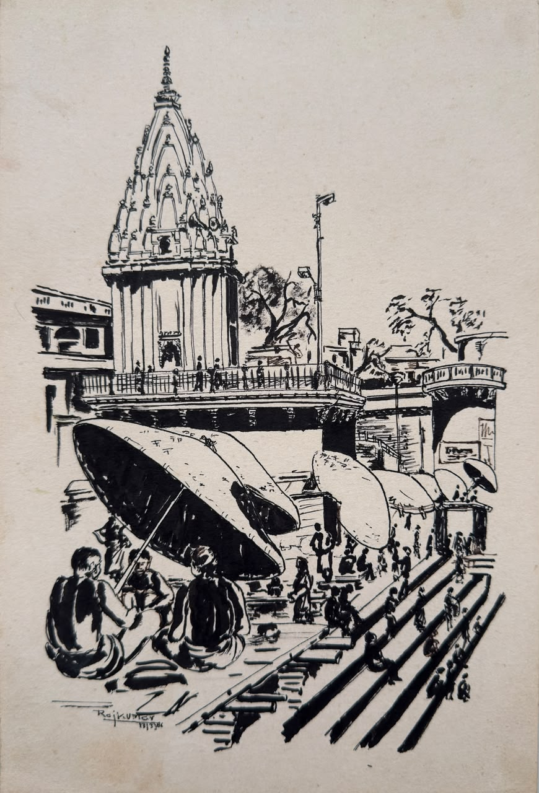

Early years
The beginning of a lifelong relationship with drawing, colour and observation.
A personal art archive
A quiet digital home for the paintings and creative legacy of Rajkumar Gupta — an art teacher who spent a lifetime helping people look more closely, imagine more freely and create with feeling.

The collection
Original paintings from the archive. Open any work for a closer view and its accompanying note.
About the artist
Rajkumar Gupta’s creative life belongs not only to finished canvases, but also to the act of teaching: observing carefully, experimenting patiently and encouraging others to make something of their own.
“Art is not only what we make. It is what we learn to notice.”
The journey
As this archive grows, stories, dates and memories can be added alongside the paintings.
The beginning of a lifelong relationship with drawing, colour and observation.
A career shaped by classrooms, students and the belief that creativity can be taught through curiosity.
Paintings and memories gathered here so the work can keep telling its story.